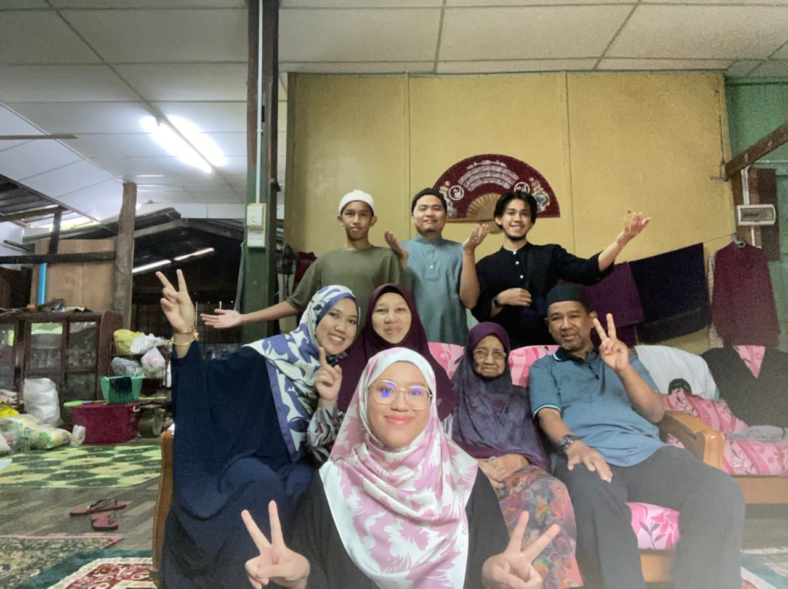

Meet My Wonderful Family
| Name | Abdul Hadi Bin Ali |
|---|---|
| Age | 58 |
| Birth date | 12 October 1966 |
| Place of birth | Kelantan |
| Education | Institut Kemahiran MARA (IKM) |
| Occupation | Technician |
| Children | 6 |
| Name | Hazilah Binti Abdul Rahim |
|---|---|
| Age | 59 |
| Birth date | 5 April 1965 |
| Place of birth | Kelantan |
| Occupation | Housewifes |
| Children | 6 |

| Name | Fatin Farzana |
|---|---|
| Age | 29 |
| Birth date | 20 July 1995 |
| Place of birth | Kelantan |
| Education | - Asasi Sains University Malaya (PASUM) - Bachelor of Audiology (Hons) |
| Occupation | Audiologist |
| Spouse | Muhammad Tarmizi Bin Bakhtiar |
| Pet ownership | oshin,oden,aiko,pho |
| Name | Fatnin Afiqah |
|---|---|
| Age | 28 |
| Birth date | 16 December 1996 |
| Place of birth | Kelantan |
| Education | - Foundation in Information Technology - Bachelor of Information Technology (Graphics & Multimedia) Hons. |
| Occupation | IT Business Analyst |
| Spouse | Abdah Azim bin Abdul Hisham |
| Name | Fathurrahman |
|---|---|
| Age | 26 |
| Birth date | 12 November 1998 |
| Place of birth | Kelantan |
| Education | Sijil Kemahiran Malaysia (SKM) |
| Occupation | Operator |
| Name | Abdul Haziq |
|---|---|
| Age | 24 |
| Birth date | 19 June 2000 |
| Place of birth | Kelantan |
| Education | - Sijil Kemahiran Malaysia 2 (SKM2) - Sijil Kemahiran Malaysia 3 (SKM3) |
| Occupation | Sales Consultant |
| Name | Zafran Zikry |
|---|---|
| Age | 17 |
| Birth date | 1 June 2007 |
| Place of birth | Kuala Lumpur |
| Education | High School |
Family Gallery